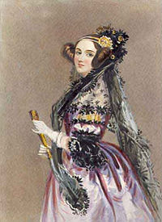

Augusta Ada Byron King, Condessa de Lovelace (nascida Byron, 10 de dezembro de 1815 — 27 de novembro de 1852), atualmente conhecida como Ada Lovelace, foi uma matemática e escritora inglesa. Hoje é reconhecida principalmente por ter escrito o primeiro algoritmo para ser processado por uma máquina, a máquina analítica de Charles Babbage. Durante o período em que esteve envolvida com o projeto de Babbage, ela desenvolveu os algoritmos que permitiriam à máquina computar os valores de funções matemáticas, além de publicar uma coleção de notas sobre a máquina analítica.
Por esse trabalho é considerada a primeira programadora de toda a história. Lovelace nasceu em 10 de dezembro de 1815 e é a única filha legítima do poeta Lord Byron e sua esposa Anne Isabella "Anabella" Byron, Lady Wentworth. Todos os outros filhos de Lorde Byron nasceram fora do casamento. Byron foi escritor de uma das versões de Don Juan. Se separou da esposa um mês depois do nascimento de Ada e deixou a Inglaterra para sempre, quatro meses depois. Acabou morrendo doente durante a Guerra da Independência Grega, quando Ada tinha oito anos de idade. A mãe de Ada promoveu o interesse de Ada em matemática e lógica, em um esforço para impedi-la de desenvolver o que ela via como a insanidade de Lord Byron. Mas Ada permaneceu interessada em seu pai e, a seu pedido, foi enterrada ao lado dele quando morreu
Em 16 de Janeiro de 1816, Annabella, a pedido de George, se mudou para a casa de seus pais em Kirkby Mallory levando Ada com ela, que na época tinha apenas um mês de idade. Embora a lei Inglesa desse ao pai a custódia total de seus filhos em caso de separação, Byron não fez nenhuma tentativa de reivindicar seus direitos, mas pediu para que sua irmã o mantivesse informado sobre o bem-estar de Ada.[16] Em 21 de abril, Byron assinou a escritura de separação, com muita relutância, e deixou a Inglaterra para sempre alguns dias depois. Além de não aceitar bem a separação amarga, Annabella fez acusações sobre o comportamento imoral de Byron, durante toda sua vida. Este conjunto de eventos deixaram Ada famosa na sociedade vitoriana. Byron não tinha um relacionamento com sua filha e nunca mais a viu. Ele morreu em 1824, quando ela tinha oito anos. Sua mãe era a única figura parental significativa em sua vida. Ada não foi autorizada a ver qualquer retrato de seu pai até seu vigésimo aniversário. Sua mãe se tornou Baronesa Wentworth em 1856.
Ada não era próxima de sua mãe e era deixada aos cuidados de sua avó materna Judith Hon, Lady Milbanke, que a mimava. Porém, devido aos costumes da época, Lady Byron teve de se comportar como uma mãe amorosa aos olhos da sociedade. Ela enviava cartas para Lady Milbanke onde falava sobre o bem-estar da menina, mas sempre com uma nota instruindo a avó a guardar as cartas para que a mesma pudesse usá-las para provar seu amor maternal. Em uma das cartas, Lady Byron se referiu à Ada como “aquilo”: “Falarei com aquilo para lhe satisfazer, e não para deleite próprio, e deverás ser grata quando aquilo estiver sobre tua guarda”.Durante sua adolescência, Ada foi vigiada por conhecidos de Lady Byron, a fim de lhe reportar qualquer sinal de desvio moral, a menina os apelidou de “Fúrias” e dizia que inventavam histórias exageradas sobre sua pessoa.